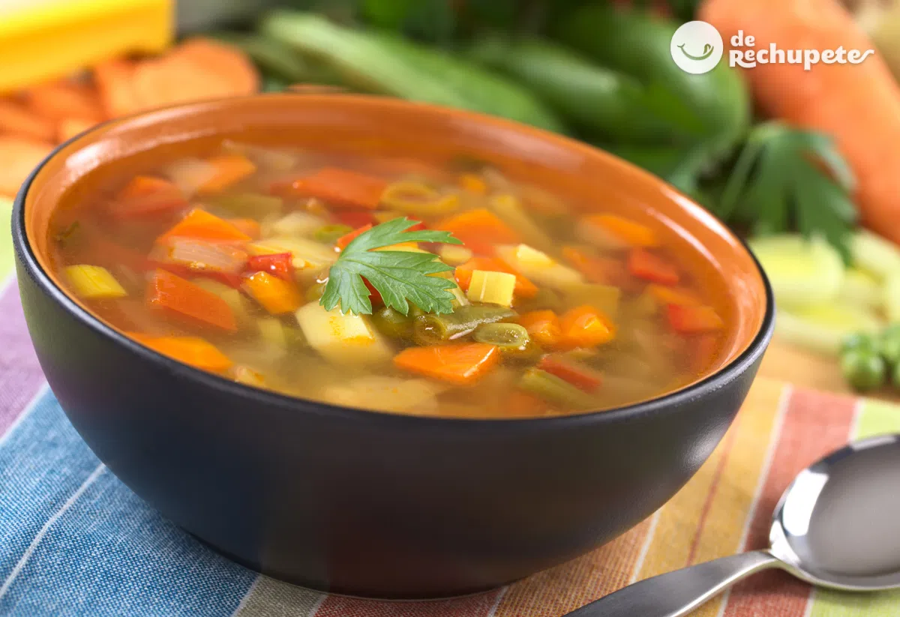

|
Descubre cómo preparar sopas deliciosas y reconfortantes para cualquier temporada.

| Tipo de Sopa |
Ingredientes |
| Sopa de Pollo |
Pollo, zanahoria, papa, apio, fideos, cebolla, ajo, sal |
| Sopa de Tomate |
Tomates, cebolla, ajo, caldo de pollo, crema, albahaca, sal |
| Sopa de Lentejas |
Lentejas, zanahoria, cebolla, tomate, pimiento, comino, sal |
| Sopa de Mariscos |
Camarones, calamares, pescado, cebolla, ajo, tomate, caldo de pescado |
|
Secciones
|